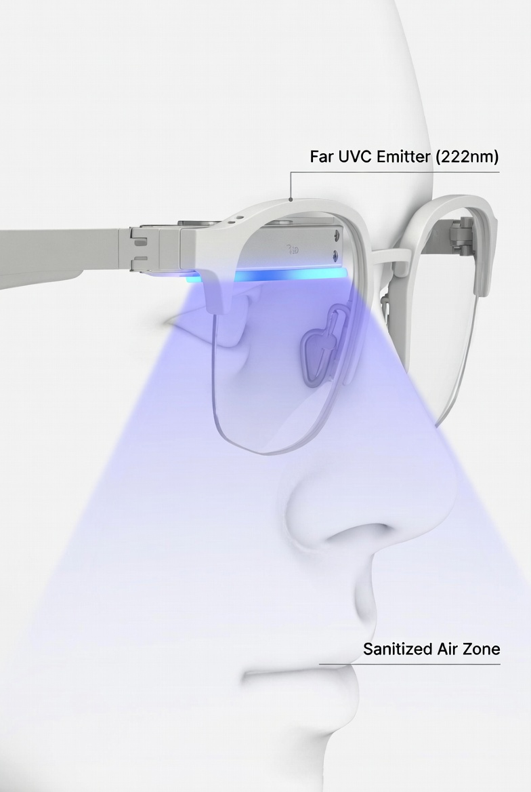

This is an idea I had after taking the Bluedot Impact biosecurity course. Part of my site’s purpose is to be somewhere I can dump ideas - here’s one of them.
The Bluedot course covers a bunch of technologies for hardening spaces against biological threats. One that stood out to me was Far UVC light (specifically 222nm wavelength). The research shows it can inactivate viruses and bacteria in seconds as it’s rapidly absorbed by proteins, and unlike regular UVC, it doesn't penetrate past the dead outer layer of skin.
[From Görlitz et al., 2024. Skin penetration depth of UV radiation (200–300 nm) based on a simulation. The lines show where 50%, 10%, and 1% of radiation intensity remains after accounting for absorption and scattering.]
UVC is absorbed by proteins much more than by Nucleic Acid.
[Extracted from BluePrintBioSecuirity: Excerpted from IUVA, 20211; original sources Setlow and Doyle, 195713 and Voet et al., 196314. Nucleic acid and protein absorbance spectra by wavelength, normalized to 254 nm on a linear vertical scale.
The course also covered PPE. Masks work in theory, but I keep thinking about a pattern I've noticed in both biosecurity and cybersecurity: security that requires active human compliance tends to fail. People wear masks wrong, or take them off because they're uncomfortable, or just forget. Also, somewhat pessimistically I simply don’t believe in people doing stuff properly, especially in a game scenario like biodefence: If you're defending against 1000 threats and you slip once, you lose. It's not about winning - it's about not losing. Vigilance is key, and people suck at that. This is why I liked the idea of Far UVC in rooms: it’s proposed to be set up in rooms with big projector systems to irradiate the whole room. The full Blueprint for Far UVC has lots more details on this.
But room-scale UVC has its own issues — it degrades materials, uses a lot of power, and only works in spaces that have it installed. Which got me thinking about whether you could make it personal.
Put a Far UVC emitter on the underside (or similar) of a wearable, such as smart glasses, pointed downward toward the nose and mouth to create a irradiation zone of the air being breathed in and out by the user, such that all of the airflow passes through a UVC sterilisation screen which kills all bacteria and viruses. The usage of Far UVC focusses the light into the region that is non-harmful for prolonged human exposure and is highly efficient at killing viruses. Other embodiments include dedicated visors, head gear, helmets etc.
To solve impending power consumption problems, a sharply focussed linear array may be considered, pulsing, scanning, timing with breath may be considered. Headgear such as visors and helmets may be advantageous to house larger power supplies.
The advantages as they seem to me are as follows:
[AI generated, Grok] [AI generated, nanobanana]
CFD images of droplet viral transmission from https://doi.org/10.1016/j.buildenv.2016.07.005 and https://cfdflowengineering.com/cfd-analysis-covid-transmission-by-person-to-person-spreading/
Masks work, but they require you to actually wear them correctly, all the time.
Grok for image gen